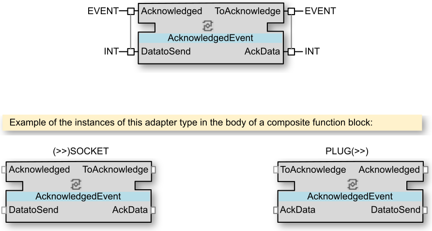
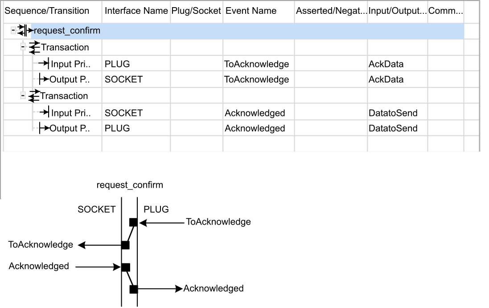
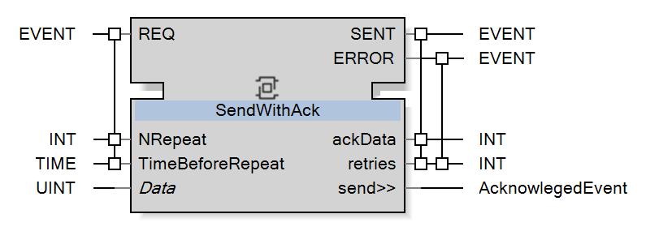
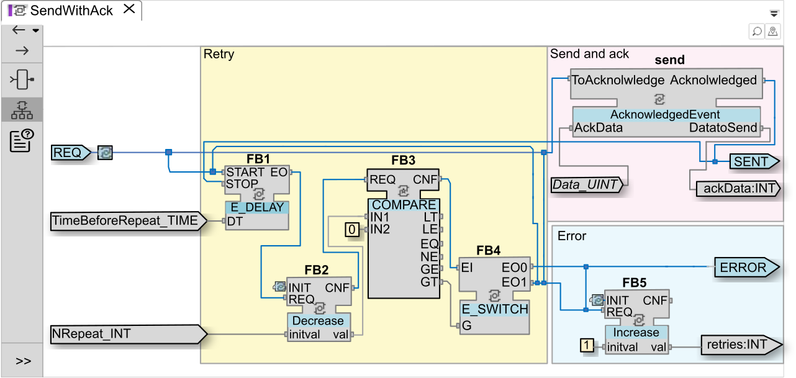
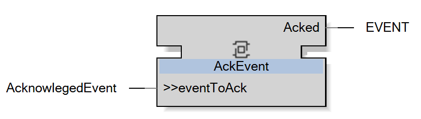
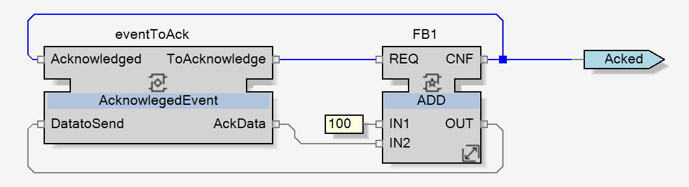
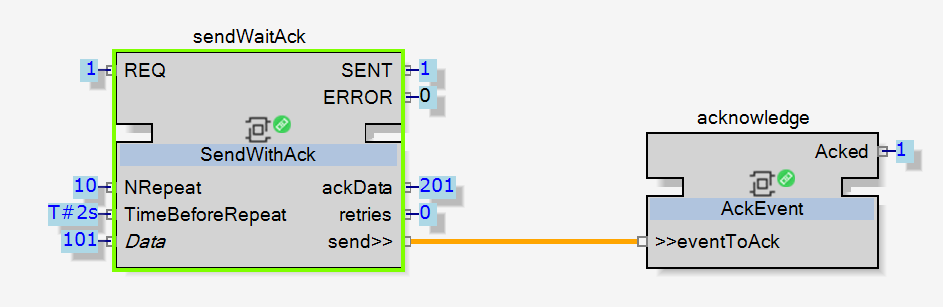
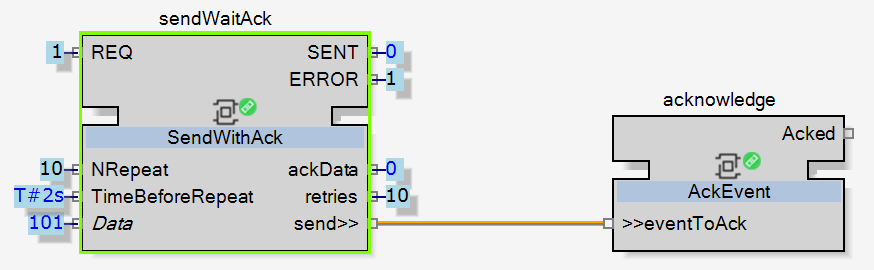

Solution Principles
Event monitoring can be implemented rather easily using adapters (allowing data exchange bidirectionally) and a re-send-until-acknowledgment mechanism. The event will be resent until the reception of an acknowledgement signal.
Let’s define a simple event REQ with an INT as parameter repeat it N times at a time interval, and then raise an error if none of them was acknowledged.
AcknowledgedEvent Adapter
Use the Adapter function block to create the AcknowledgedEvent adapter.
As implemented in this example, the AcknowledgedEvent adapter is used both:
-
On the sender side (Plug) that sends the event, and
-
On the receiver side (Socket) that will send back an acknowledgement.


SendWithAck Composite

|
To learn more about how to create a composite function block, watch How to Create a Composite Function Block in EcoStruxure Automation Expert. |
The SendWithAck Composite is used on the sender side (Plug):

The number of send retries (NRepeat) and the delay between each repetition (TimeBeforeRepeat) can be specified. If NRepeat is equal to 0, then there is no retry.
If the acknowledgement has been received, it will trigger a SENT event with the acknowledged data and the number of retries attempted.
If the acknowledgement has not been received then it will trigger an ERROR event with the number of retries attempted.
The SendWithAck Composite logic is split into three zones:
-
Send and ack: Send event and receive acknowledgement
-
Retry: Retry communication
-
Error: Detects the absence of acknowledgement after the specified number of retries

AckEvent Composite
The AckEvent composite is used on the receiver side (Socket) that will send back an acknowledgement.


Upon receiving a ToAcknowledge event it will:
-
Trigger a fake process by increasing the data by +100 increment.
-
Send the acknowledged event to the sender with this new process data value.
-
Raise the Acked event locally (to show the number of acknowledged events).
Application Level Monitoring
At application level, there is one instance of sender and receiver, connected through the defined adapter.
Each function block is deployed on a different device (cross-communication).

In the illustration, above, the SENT event has been fired to the sender, there was no communication error as the event was acknowledged (without any retry) by the receiver, and the triggered process shows the expected result (ackdata = Data + 100, as expected). On the receiver side the Acked event has been raised (value = 1).

In the illustration, above, the acknowledgement has not been received after 10 retries and the ERROR event is fired.